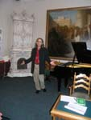

1. September 30, 2006 executed 75 years to the Nikolaev poet, winner of the premium by N. Ushakov, honourable member of Nikolaev Pushkin club of the Emil’ Izrailevich Yanvarev (1931-2005). The public of city has noted this date and memory of the poet of presentation him of last book of verses “Original” at urban assembly, which was held on February 20 in the Central urban library by M. Kropivnitsky. The book is issued by publishing house of Iren Gudym with assistance of the directors of the Nikolaev management of bank "Aval’" of Sergey Prudkoy and Charitable fund of ”Nikolaev- 2000". Evening order the schoolboys and friends of Yanvarev the poets Vladimir Puchkov and Ekaterina Golubkova. On evening were present the wife of the poet L.P. Kostuik and daughter Uinna

2. In publishing house of Iren Gudym there was a selection of the brochures by Anatoliy Zolotukhin from 8 of releases «Unknown about Pushkin»:
Issue 1 – «Two histories about love»

Issue 2 - «Relatives on inspiration (Pushkin and Gete)» In release the hypothesis of the author is given, how Pushkin has helped Gete (20 years he could not find the decision!) to finish "Faust", and Gete, in turn, has helped Pushkin to decide a problem of creation of a poem «Copper horseman»
Issue 3 – «Pushkin and Rafael»
Issue 4 - «A fairy Tale about king Saltan» - description of secret arrival of Pushkin in Nikolaev»
In release the proofs are given that «The fairy Tale about king Saltan» is a description of secret arrival of Pushkin in Nikolaev in October, 1823 on a yacht E. Zontag "Consolation".

Issue 5 – «Secret of trip of Pushkin «on a locust»

Issue 6 - «A.S. Pushkin and V.I. Dahl» - the mutual relation of Pushkin with Dahl is considered. The proofs (are submitted on the basis of the archival data) that Dahl did not write critical versus on the wife of the admiral of Greyg. Is considered prophecy figure of Pushkin, connected with fate of Carl Dahl, brother of V.I, Dahl.

Issue 7 – «The Prophet of Russia» (secret of destruction Pushkin)
Issue 8 - «A Feast during a plague» of A.S. Pushkin (tragedy of the Genius)» - the proofs that tragedy of A.S. Puskin «A Feast during a plague» was by farewell song, presentiment of close destruction. An occasion for punishment above the poet was that he actually was the ideologist of revolt decabrists.

As variant of this selection of the brochures the author develops the book «Unknown about Pushkin» (208 pages 98 il.), in which all these releases are submitted. The book has left in small circulation in publishing house of Iren Gudym

3.The book by Anatoliy Zolotukhin of «Secrets"The tale of price Igor’ campaign"» (mono-graphical was issued research).-
Nikolaev, Publishing house Iren Gudym, 2005.-560 pages, silt.

The author worked above this theme more than 25 years. The information concerning the discovery, which deals with one of the most outstanding monuments of the Old Russian literature of XII century – “Slovo o polku Igoreve” (“The tale of prince Igor’s campaign”) is given in this book. The evidence collected shows that “Slovo…” is made in a genre of secular Godservice. It means, that its secular content is arranged in the form of godservice. The text of the monument in the way of its form can be presented in two versions of the church service: in the form of All nightly vigil and as a Byzantian canon. It is shown, that it was Illarion-Nikon (997-1088) who was the first to develop this genre in the Old Russian literature. He appears in “Slovo…” under the name of Bojan. The canon comprises over 250 secret akro-, meso- and televerses, both separate and interwoven in a special way. It is shown, that akroverse summarizing the whole work is compiled in the way of a cross. On the basis of author’s instructions, the technique and rules of compiling secret akromesoteleverses has been restored. Compilation of verses, being basic ones, from 13 syllables or composed from 5 words in Hebrew verse, which had no vowels were laid into the foundation of those rules.
As is demonstrated on particular examples of texts of Byzantian and Ancient Bulgarian, the technique of compiling latent verses is dated far into the early history. The family tree from Adam up to Christ is made up, from which it follows that there were two Homers in the world culture history. The former was the son of Iaphet and grandson of Noah. 12 centuries later the second Homer came to life – a poet, founder of European culture. It is shown, that Moses was the first who made the family tree of five verses, each comprising 5 names. After him David repeated this experience. The example of Ancient Greek akroteleverse decoding is presented (later than 581 B.C.), being compiled from 13 syllables. This secret verse was obtained in result of deciphering an epitaph on the stone found on the Berezan’ island in 1900. It allowed us to determine, that Homer was born in September 14, 657 B.C. and died in July 18 or August 15, 581 B.C.
From latent verses it was possible to determine, that the author of “Slovo...” was Cyril Turovskoy (1101-1208). It became possible to find out some other important circumstances of life and creative work of Cyril Turovskoy and Ilarion-Nikon-Bojan, as well as define the date of creation and performance of “Slovo…” in Kiev from March 25 till April 3, 1187. A brief biography of Cyril Turovskoy was compiled. From secret verses of “Slovo…” the biographic dates of the founder of the Kiev Rus, i.e. of Great Riurik were found out: March 25, 816 – July 2, 879 A.D.. His father was a byzantian from an imperial kinship of Tour (born in 777), and his mother was Valentina Igorevna (born in 795). Her father was a slav prince Igor Davydovich. Riurik was born in the town of Turov, founded by his father. Therefore Riurik was not an alien viking.
It is demonstrated that one of the most ancient monument of the history is the Kiev corpus of chronicles composed in the same genre, as “The tale of prince Igor’s campaign”. In 1186 Cyril Turovskoy accomplished staging the chronicle record about a campaign of prince Igor Svyatoslavich against polovtsi in 1185. It was clarified, that in order to carry out this performance the great Kiev prince Svyatoslav Vsevolodovich constructed the first Old Russian theatre in 1187. The outlook of the theatre and the script of ‘’Slovo’’ performance were restored. It was proved, it was the first opera in the history of mankind, that appeared 300 years earlier than Italian opera. In five volumes of “Encyclopedia” of the “Slovo…”, compiled by the Russian Academy of sciences (St-P., 1995), there is not a single article concerning this subject, the name of the author has no relevance to the name of Cyril Turovskoy. The name of Bojan is neither associated with the name of Ilarion-Nikon.
4. INTERNATIONAL DAY of POETRY of 2006 in NIKOLAEV! The fourth year Nikolaev Pushkin the club together with the Nikolaev regional organization of National union of the writers of Ukraine marks the World day of poetry. This time meeting with the professionally writing poets has taken place in Sunday of March 26, 2006, at 14 hours, in a musical drawing room of an art museum by V.V. Vereschagin. Evening order the chairman of Union of the writers Vyacheslav Kachurin and chairman Pushkin of club Anatoliy Zolotukhin. The evening was opened by the schoolboys Marina Matveeva: Mikhail Kvan and Paul Tyslyak. On evening the poets Arcadiy Surov read verses of E. Yanvarev, Marina Matveeva (read yourself the verses also has executed on a piano of product Shopen). The verses read Mikhail Kovalevskiy, Tamara Moskalenko, Svetlana Mezina etc. In conclusion of evenings Vyacheslav Kachurin has executed romances on the words under of a guitar. On evening have sounded in performance Valentiny Zakharova and Liliya Roznina, on a piano accompanied Valeriy of the Apostles: for a romance «I search in a nature beauty» (verses And. Chepurov, music I. Dubravin) and «A Song about hearts» (verses In. Schennikov, music of. Levkodimov). 


 |
 

|